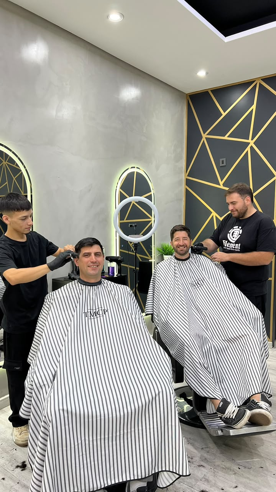

Servicio
Afeitado a navaja con toalla caliente
El ritual clásico de la barbería de siempre. Toalla caliente, pre-shave, navaja al ras, toalla fría y bálsamo. Una experiencia, no solo un afeitado.

El ritual completo, paso a paso
- Toalla caliente — abre los poros y ablanda el vello
- Pre-shave — protege la piel y lubrica la navaja
- Espuma profesional — generada con brocha, no de aerosol
- Afeitado al ras — respetando la dirección del vello para evitar irritación
- Toalla fría — cierra el poro y calma
- Bálsamo post-afeitado — hidrata y termina la rutina
Por qué a navaja y no con maquinita
La navaja corta al ras del poro, dejando la cara mucho más suave que cualquier afeitadora eléctrica. La diferencia se nota durante 2-3 días. El ritual, además, es relajante: 20 minutos de pausa real.
Ideal para vos si...
- Tenés un evento o una ocasión especial
- Querés sacarte la barba al ras con la mejor terminación posible
- Buscás probar un servicio clásico de barbería